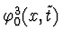
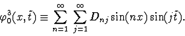
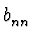
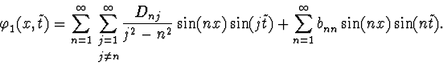

Now it is easy to find this periodic
solution
 .
Let us designate
the Fourier coefficients of the function
.
Let us designate
the Fourier coefficients of the function

as Dnj:
Equation (4) gives the following result(

are arbitrary numbers):
It should be noted that the function
 with arbitrary diagonal coefficients
is a
solution of equation (4) and that all off-diagonal coefficients of
with arbitrary diagonal coefficients
is a
solution of equation (4) and that all off-diagonal coefficients of
 are proportional to A3.
are proportional to A3.